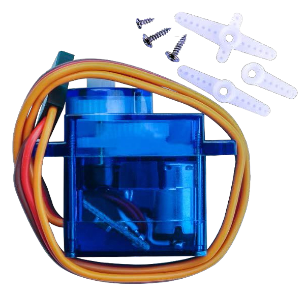
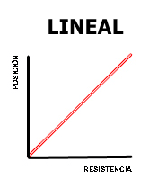
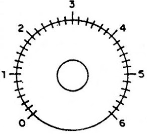
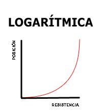

En este tema aprenderemos a utilizar y configurar un servomotor utilizando la placa de arduino, además veremos algunas diferentes utilidades que se le pueden dar a estos componentes electrónicos.
(1) x Placa Arduino
(1) x Servomotor (SG90)
(3) x M M cables (cables macho a macho)
El servo es un tipo de motor eléctrico que sólo puede girar 180 grados. Se controla mediante el envío de
impulsos eléctricos de la placa de Arduino. Estos pulsos le dicen al servo en que dirección debe moverse.
El Servomotor tiene tres cables, el marrón es el cable a tierra y debe conectarse al puerto GND de la placa,
el rojo es el cable de corriente y debe conectarse al puerto de 5v y el naranja es el alambre de señal y debe
conectarse al puerto 9.
Algunas de las características de este servomotor SG90 son:
- Cable Universal para conectores JR y FP
- Longitud del cable: 25cm
- Velocidad: 0,12 seg/60 grados (4.8V), 0.10 sec/60 grados (6.0V) (sin carga)
- Puesto de par (4.8V): 1,6 kg/cm
- Temperatura: -30 ~ 60' C
- Voltaje de funcionamiento: 3.5 ~ 6V
- Dimensión: 3,2 x 3 cm x 1.2 cm)
- Peso: 134 gr.



Una vez efectuado todo el cableado, descargaremos el script del siguiente este
link y lo cargaremos como hemos aprendido.
Antes de ejecutar este script, asegúrate de que se ha instalado la biblioteca servo, de lo contrario,
el código no funcionará. Puedes descargarlo desde
este link
En la foto, el cable marrón del servo se adapta a través del cable negro, el rojo se adapta a través del cable rojo y el naranja se adapta a través del cable amarillo.

Volver al índice